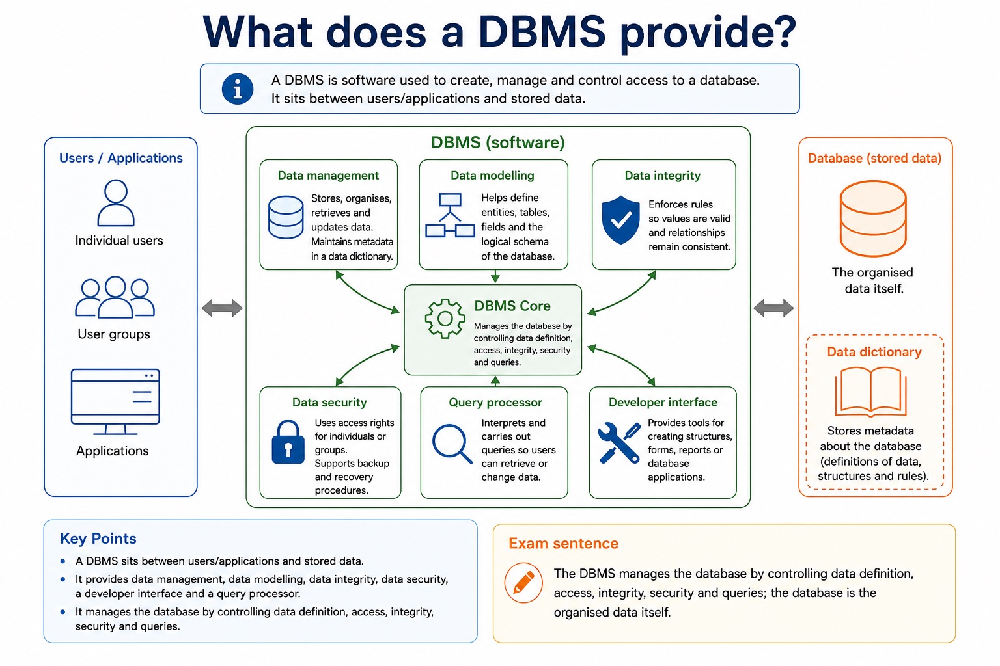
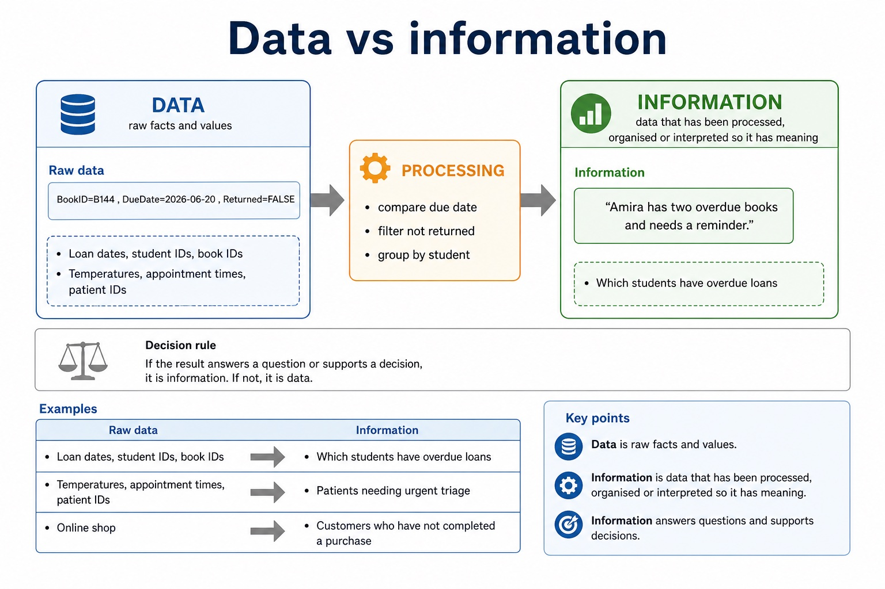
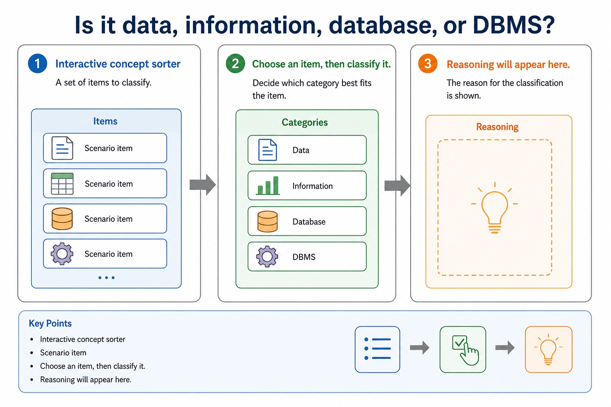

Data, databases, relational solutions and DBMS features
A file-based approach can repeat facts in separate files, create inconsistent copies and isolate related data. A Database Management System (DBMS) addresses these file-based limitations by providing data management, including a data dictionary of metadata; data modelling; a logical schema; data integrity; and data security. Security includes backup procedures and access rights assigned to individual users or groups.
A developer interface provides tools used to define structures and build database applications, forms or reports. A query processor interprets and checks a query, chooses how to carry it out, accesses the stored data and returns or modifies the specified records while the DBMS applies access and integrity rules.
A file-based approach stores data in separate application files. The same fact may be repeated in several files or records, causing redundancy and wasted storage. Updating only some copies creates inconsistency; insertion and deletion can also lose or require unrelated facts. Separate files may use incompatible formats, isolate data, duplicate validation/security code and make shared querying, concurrent access, backup and recovery harder to manage.
A relational database addresses these limitations by separating entities into linked tables, storing shared facts once, identifying records with keys and enforcing relationships and constraints centrally. A DBMS supplies shared query processing, integrity, security, access rights and backup. These mechanisms reduce particular file-based risks; a relational design is not automatically smaller, simpler or error-free.
Relational databases address file-based duplication, inconsistency, isolation and access problems through related tables, keys, constraints and managed queries.
Worked example: Run a restricted query / Replace a repeated order file
A developer enters a SELECT statement through the developer interface. The query processor checks the statement and the user's access rights, works out an execution plan, retrieves the permitted rows and returns the result. The data dictionary supplies definitions such as field types, keys and constraints; it does not hold the ordinary user records. A flat Order file repeats CustomerName and Address in every order row. Split it into Customer(CustomerID, CustomerName, Address) and Order(OrderID, CustomerID, OrderDate). CustomerID links each order to one stored customer, so an address is updated once instead of in every order row.
What does a DBMS provide?

What does a DBMS provide?: source-grounded visual explanation.
Lesson fact: A DBMS is software used to create, manage and control access to a database. It sits between users/applications and stored data.
Lesson fact: Data management stores, organises, retrieves and updates data; maintains metadata in a data dictionary.
Lesson fact: Data modelling helps define entities, tables, fields and the logical schema of the database.
Lesson fact: Data integrity enforces rules so values are valid and relationships remain consistent.
Lesson fact: Data security uses access rights for individuals or groups; supports backup and recovery procedures.
Lesson fact: Developer interface provides tools for creating structures, forms, reports or database applications.
Lesson fact: Query processor interprets and carries out queries so users can retrieve or change data.
Lesson fact: Exam sentence:
Lesson fact: The DBMS manages the database by controlling data definition, access, integrity, security and queries; the database is the organised data itself.
Core syllabus practice
Data, databases, relational solutions and DBMS features: apply and assess
Targeted practice
1. What five broad DBMS feature areas are required?
Show answer
Data management including a data dictionary, data modelling, logical schema, data integrity, and data security including backup and access rights.
2. What does a data dictionary store?
Show answer
Metadata such as table, field, type, key and constraint definitions.
3. What is the purpose of a developer interface?
Show answer
To provide tools for defining structures or building database applications, forms and reports.
4. What is the role of the query processor?
Show answer
To interpret/check, plan and carry out database queries or data-maintenance statements.
5. Which DBMS feature limits users or groups to permitted operations?
Show answer
Access rights within data security.
6. Why can repeated data create inconsistency?
Show answer
One copy may be changed while another remains out of date.
7. What is data isolation in a file-based system?
Show answer
Related data is kept in separate files or formats, making combined access and queries difficult.
8. Which relational feature connects an order to its customer?
Show answer
A foreign key in Order referring to the Customer primary key.
9. Why is 'relational databases are always simpler' not a valid benefit?
Show answer
Linked tables and DBMS administration add complexity; benefits must be tied to a file-based limitation.
Exam-style question
12 marks
A school is introducing a relational DBMS. Explain four DBMS features and the distinct purposes of the developer interface and query processor. A clinic repeats patient details in separate appointment, billing and treatment files. Explain three file-based limitations and a relational-database feature that addresses each one.
Show MS
Answer
Guidance
Marks
data management/data dictionary stores metadata about structure
Do not treat the database, data dictionary, developer interface and query processor as interchangeable names. Do not award a generic claim such as 'relational is better' without a named limitation, mechanism and consequence.
1
data modelling or logical schema represents the database design
1
integrity rules maintain valid and consistent data
1
security uses access rights and backup procedures
1
developer interface supports defining structures or building database applications/forms/reports
1
query processor interprets/checks and carries out queries or maintenance statements
1
repeated patient facts cause redundancy or wasted storage
1
linked tables store a shared patient fact once
1
separate copies can become inconsistent after partial updates
1
central keys/constraints and one stored fact improve consistency
1
isolated files/formats make combined retrieval or control difficult
1
DBMS query, integrity, access-right or backup service addresses the named difficulty
A database is an organised collection of related data managed through defined structures and controls.
This lesson starts Section 8 by separating raw data from useful information, defining a database,
and explaining what a Database Management System (DBMS) provides. The focus is exam wording:
what the system stores, what the DBMS controls, and why this improves reliability.
Distinguishdata, information, database and DBMS
Describerecords, fields, tables/entities at an introductory level
ExplainDBMS roles such as dictionary, security, integrity and query processing
Users and applications
DBMS
data dictionaryquery processoraccess rightsbackup
Database
Chinese support: DBMS = 数据库管理系统，不是数据库本身。
Why this matters
Section 8 answers need exact vocabulary. "It stores data" is often too thin; the exam asks what structure or DBMS feature solves the problem.
Common error
A spreadsheet file can store data, but calling every table a database does not explain management, integrity, security or querying.
Warm-up hook
A school has 700 rows of attendance marks. Which item is information?
Raw marks are ingredients. Information is the meal. Please do not serve uncooked commas.
Choose one. Ask: has the raw data been processed into meaning?
Knowledge point 1
Data vs information
Data is raw facts and values. Information is data that has been processed, organised or interpreted so it has meaning.
Raw dataBookID=B144, DueDate=2026-06-20, Returned=FALSEProcessingcompare due date, filter not returned, group by studentInformation"Amira has two overdue books and needs a reminder."
Context
Data
Information
Library
Loan dates, student IDs, book IDs
Which students have overdue loans
Clinic
Temperatures, appointment times, patient IDs
Patients needing urgent triage
Online shop
Product IDs, basket items, prices, timestamps
Best-selling product this week
Chinese support: data = 原始事实；information = 被处理后有意义的信息。Exam answers should state the processing or meaning.
Data vs information

Data vs information: source-grounded visual explanation.
Lesson fact: Data is raw facts and values. Information is data that has been processed, organised or interpreted so it has meaning.
A database is an organised collection of related data that can be stored, retrieved and updated.
OrganisedData is arranged using defined structures, not random notes in one giant document.RelatedRecords are connected by a shared context, such as students, books and loans.RetrievableUsers can search, filter and query the data to produce information.MaintainableData can be updated while rules help reduce invalid or inconsistent values.
Student
StudentID | Name | Form
S0234 | Amira Chen | 12A
S0318 | Leo Singh | 12B
linked by ID
Loan
LoanID | StudentID | BookID | Returned
L9001 | S0234 | B144 | FALSE
L9002 | S0318 | B102 | TRUE
What is a database?
What is a database?: source-grounded visual explanation.
Lesson fact: A database is an organised collection of related data that can be stored, retrieved and updated.
Lesson fact: Organised Data is arranged using defined structures, not random notes in one giant document.
Lesson fact: Related Records are connected by a shared context, such as students, books and loans.
Lesson fact: Retrievable Users can search, filter and query the data to produce information.
Lesson fact: Maintainable Data can be updated while rules help reduce invalid or inconsistent values.
Lesson fact: StudentID | Name | Form
Lesson fact: S0234 | Amira Chen | 12A
Lesson fact: S0318 | Leo Singh | 12B
Lesson fact: linked by ID
Lesson fact: LoanID | StudentID | BookID | Returned
Lesson fact: L9001 | S0234 | B144 | FALSE
Lesson fact: L9002 | S0318 | B102 | TRUE
Knowledge point 3
What does a DBMS provide?
A DBMS is software used to create, manage and control access to a database. It sits between users/applications and stored data.
Data managementstores, organises, retrieves and updates data; maintains metadata in a data dictionary.Data modellinghelps define entities, tables, fields and the logical schema of the database.Data integrityenforces rules so values are valid and relationships remain consistent.Data securityuses access rights for individuals or groups; supports backup and recovery procedures.Developer interfaceprovides tools for creating structures, forms, reports or database applications.Query processorinterprets and carries out queries so users can retrieve or change data.
Exam sentence:The DBMS manages the database by controlling data definition, access, integrity, security and queries; the database is the organised data itself.
Knowledge point 4
Core relational words for this lesson
This is the vocabulary doorway. Later lessons will go deeper into keys, relationships, E-R diagrams, normalisation and SQL.
Term
Meaning
Example
Entity
A thing about which data is stored
Student, Book, Loan
Table
A set of records about one entity
Student table
Record / tuple
One row in a table
S0234, Amira Chen, 12A
Field / attribute
One column or property
StudentID, Name, Form
Core relational words for this lesson
Core relational words for this lesson: source-grounded visual explanation.
Lesson fact: This is the vocabulary doorway. Later lessons will go deeper into keys, relationships, E-R diagrams, normalisation and SQL.
Lesson fact: A thing about which data is stored
Lesson fact: Student, Book, Loan
Lesson fact: A set of records about one entity
Lesson fact: Student table
Lesson fact: Record / tuple
Lesson fact: One row in a table
Lesson fact: S0234, Amira Chen, 12A
Lesson fact: Field / attribute
Lesson fact: One column or property
Lesson fact: StudentID, Name, Form
Interactive concept sorter
Is it data, information, database, or DBMS?
Choose an item, then classify it.
Reasoning will appear here.
Is it data, information, database, or DBMS?

Is it data, information, database, or DBMS?: source-grounded visual explanation.
Lesson fact: Interactive concept sorter
Lesson fact: Scenario item
Lesson fact: Choose an item, then classify it.
Lesson fact: Reasoning will appear here.
Interactive DBMS selector
Which DBMS feature solves the problem?
Choose a problem, then select the DBMS feature.
The answer should name a feature and explain its purpose.
Which DBMS feature solves the problem?
Which DBMS feature solves the problem?: source-grounded visual explanation.
Lesson fact: Interactive DBMS selector
Lesson fact: Choose a problem, then select the DBMS feature.
Lesson fact: The answer should name a feature and explain its purpose.
Worked examples
Move from messy values to exam-ready wording
Practice with instant checking
Short-answer checks
Type concise answers. Use the answer button only after committing to an attempt.
Mistake debugging
Repair common database wording errors
Exam-style questions
Original Cambridge-style practice with expandable MS
These are original questions written in Cambridge style. The mark schemes are strict about terminology.
Summary
Three distinctions to keep clean
Data vs informationData is raw values; information is processed data with meaning.
Database vs DBMSThe database is organised related data; the DBMS is the software that manages it.
Table wordsEntity/table, record/tuple and field/attribute describe relational database structure.
Homework
Clear tasks for consolidation
Task 1: Vocabulary precisionWrite one exam-ready definition each for data, information, database and DBMS. Add one Chinese support note beside each.Task 2: Scenario applicationA sports club stores member, payment and training attendance data. Write four bullet points explaining how a DBMS could help, naming a different feature each time.Task 3: 4-mark answerAnswer: "Explain two features provided by a DBMS that help manage a school database." Use two distinct features and explain the effect of each.